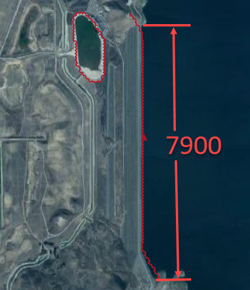
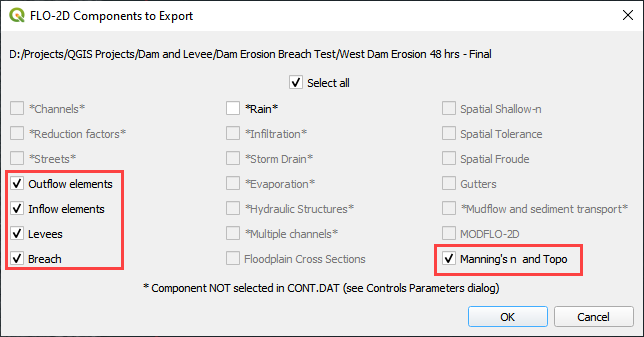
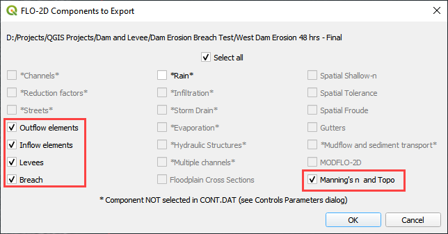

Dam Breach - Erosion#
Overview
In this tutorial, an erosion dam breach with failure is created. In this instance, the reservoir is filled but the pre-reservoir elevation is known.
Required Data
The required data is in Module 6.
File |
Content |
|---|---|
*.qgz |
QGIS data files |
*.gpkg |
FLO-2D Geopackage |
*.tif |
Grid elevation |
Step 1: Load the project#
We are finished with the previous project. Save and close it.
Start with the project from Module 6.
If necessary, load it into QGIS. Open QGIS and drag the Erosion Breach Module 6.qgz file into the project.
Save the project.
Click Yes to load the model.
Step 2: Initial conditions reservoir#
An initial condition is set to fill the reservoir when FLO-2D PRO.exe initiates the simulation.
Set up this condition in QGIS.
Click the collapse widgets button.
Open the Initial Condition Editor widget.
Click the add reservoir button.
Place a reservoir node anywhere within the reservoir area and fill the form. Click ok to close the data.
Click the Save button and the Schematize button on the widget.
This data is saved to the INFLOW.DAT file when the model is exported.
Step 3: Review dam geometry#
Crest width = 32 ft
Crest length = 7900 ft
Shell slope US and DS = 2
Core slope = 0.5
Step 4. Review dam material#
Each variable is discussed in the Data Input Manual BREACH.DAT tab. This data may be available from the original dam construction manual or from periodical safety reports. Check with the dam owner, or dam safety agency for data.
Value |
Variable |
Description |
|---|---|---|
0.1 |
d50c |
d50 core (mm) |
0.35 |
porc |
porosity core |
120 |
uwc |
unit weight core (lb/ft3) |
0.15 |
cnc |
roughness n core |
33 |
afrc |
angle of internal friction core(degrees) |
750 |
cohc |
cohesive strength core (lb/ft3) |
50 |
unfcc |
sediment gradient ratio |
50 |
d50s |
d50 shell (mm) |
0.4 |
pors |
porosity shell |
100 |
uws |
unit weight shell (lb/ft3) |
0.2 |
cns |
roughness n shell |
32 |
afrs |
angle of internal friction shell (degrees) |
250 |
cohs |
cohesive strength shell (lb/ft3) |
10 |
unfcs |
sediment gradient ratio |
0 |
grasslength |
grass length downstream face (in) |
0 |
grasscond |
grass condition downstream face (0 or 1) |
0 |
grassvmaxp |
maximum permissible velocity (fps) |
300 |
d50df |
d50 downstream face (mm) |
2 |
unfcdf |
sediment gradient downstream face |
Step 5. Review general breach parameters#
Each variable is discussed in the Data Input Manual BREACH.DAT tab.
Value |
Variable |
Description |
|---|---|---|
2500 |
brbotwidmax |
Maximum width to constrict the bottom of the breach (ft). |
7900 |
brtopwidmax |
Maximum width to constrict the top of the breach. |
1755 |
brbottomel |
Start of breach elevation (ft). Sensitive to instability. If unstable, set to 1 to 3 ft below the crest elevation. |
3.05 |
weircoef |
Weir coefficient |
1.5 |
bratio |
Initial breach width to depth ratio. |
0.0 |
breachtime |
Time the water surface elevation must sustain before the breach will initiate (hours). |
Step 6. Create the breach point#
Identify a good breach location. Choose any desired location.
Select a breach location. This location can represent a weak point on a dam.
Spillways
Stilling basins
Sag, deformation, or erosion
Boreholes
Ends points
Piezometer measurements
Location is not always important. For large reservoirs flooding is a function of the volume not breach parameters.
It is important to start the breach from the correct side of the levee feature.
Put the breach point on the water side of the levee.
Click collapse FLO-2D widgets button.
Click the Levees and Breach Editor widget.
Click the create a breach point button.
Click the map where the breach should go and fill the table.
Choose a good location based on engineering judgment.
The data is listed in step 3, 4 and 5.
Click OK to close the table.
Not working? Click Revert Breach Edits button and try again.
Complete the breach data in the widget.

Step 7. Export and run the model#
Export the FLO-2D Data files. Click OK.
 

Select the Module 6 Export folder.
The data is ready to run.
Correct the paths and click OK to start the simulation.
Step 8. Review the data#
These are the 3 data files that were created.
Levee.dat needed a Breach switch in Line 1.
Inflow.dat has a “dummy” inflow node. This allows graphics mode to function.
Inflow.dat has the reservoir elevation. When run initiates, FLO-2D will fill the reservoir.
Breach.dat stores the breach variables.